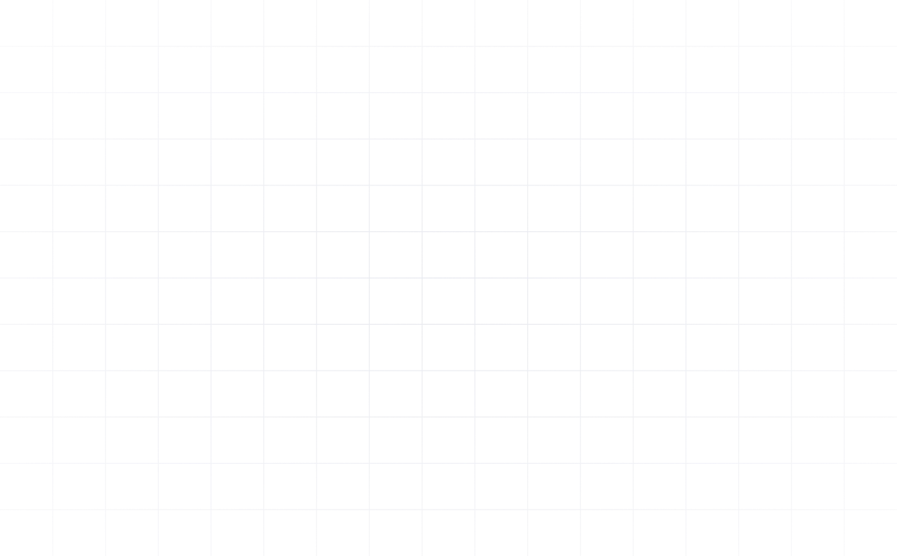
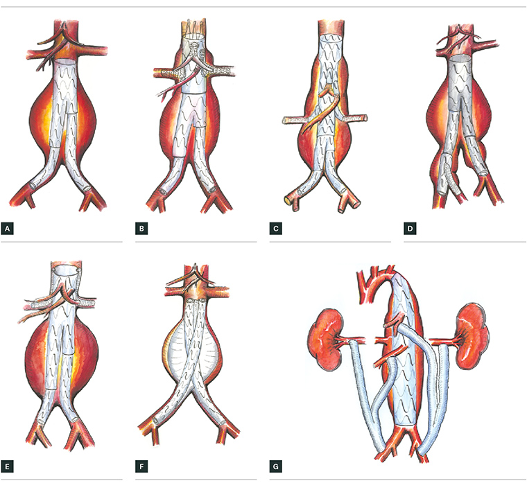
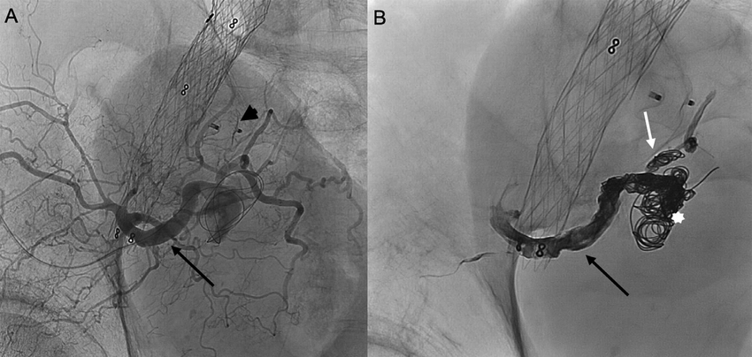

Bring physics-based digital twins into the operating room to predict patient-specific risks with medical devices.

Bring physics-based digital twins into the operating room to predict patient-specific risks with medical devices.

Modern vascular care involves complex anatomy and high-stakes decisions, yet clinicians and researchers often work with limited geometric or physiological insight.
Patient variation matters, and device optimization should be personalized to each patient. We make it possible for computational models to run on individual 3D models of patient anatomy delivering profound insight.
We work on preventing complications within the Operating Room by informing them of the personalized risks associated with each patient's anatomy.
With more insights derived prior to the procedure, surgeons can make more informed decisions and reduce the risk of complications.
Consumers can now be confident with the device they are using with, and companies can now produce devices that are more personalized to each patient.

Digital twins help teams study how individual anatomy may influence seal quality, device fit, and the risk of complications such as type Ia endoleaks before intervention.
We use an AI Digital Twin to extract the proximal neck of the aneurysm and demonstrate which regions are less likely to seal properly. Surgeons can account for this on initial insertion, preventing wasted time on intraoperative adjustments.

We generate simulation data at scale and map vascular geometries into graph representations that preserve topology and spatial relationships.
Graph neural networks are then trained to learn flow behaviour, enabling accurate prediction of velocity fields and wall shear stress across diverse patient anatomies.